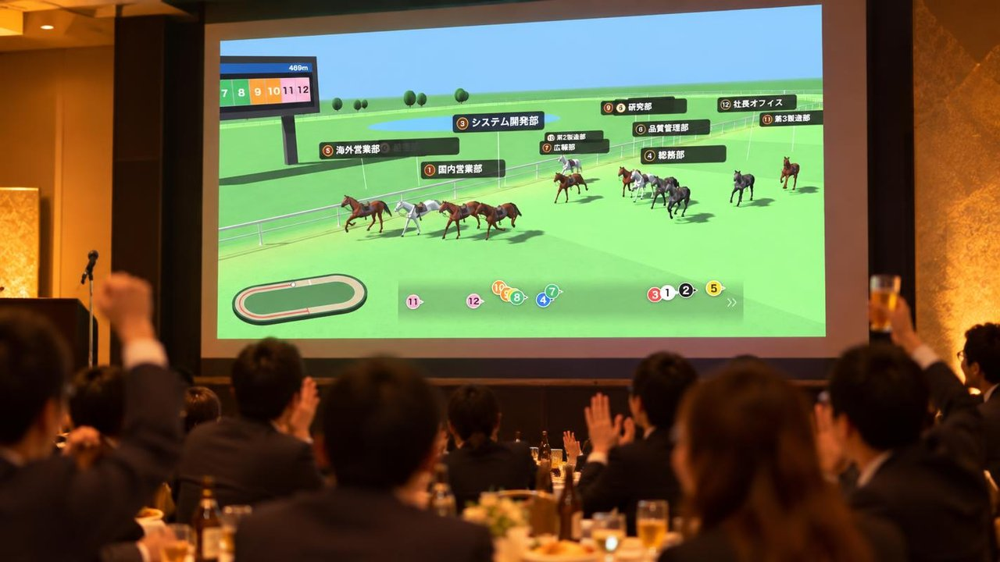
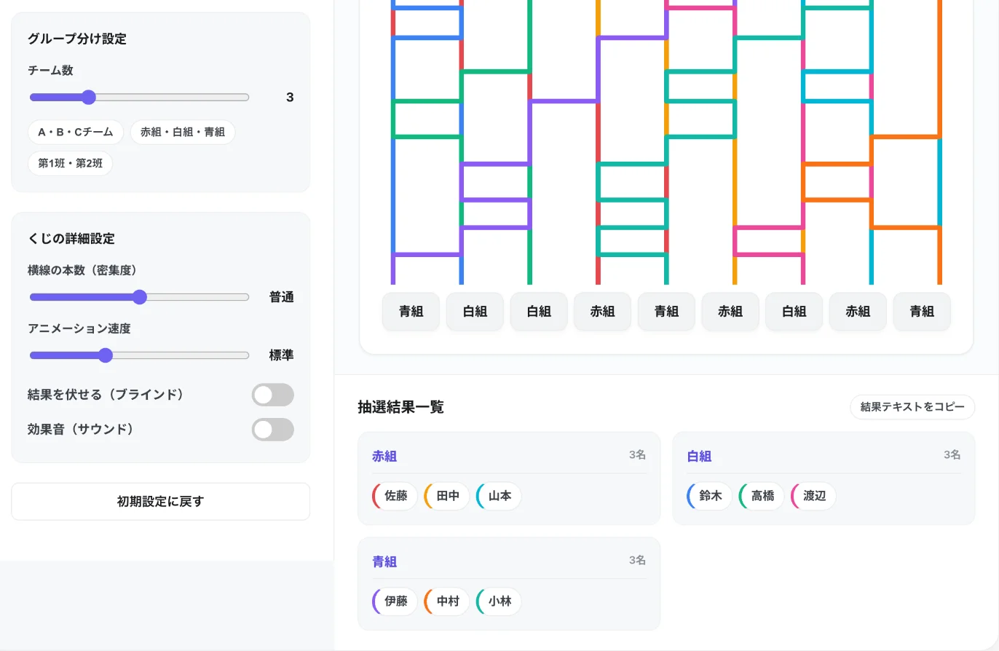
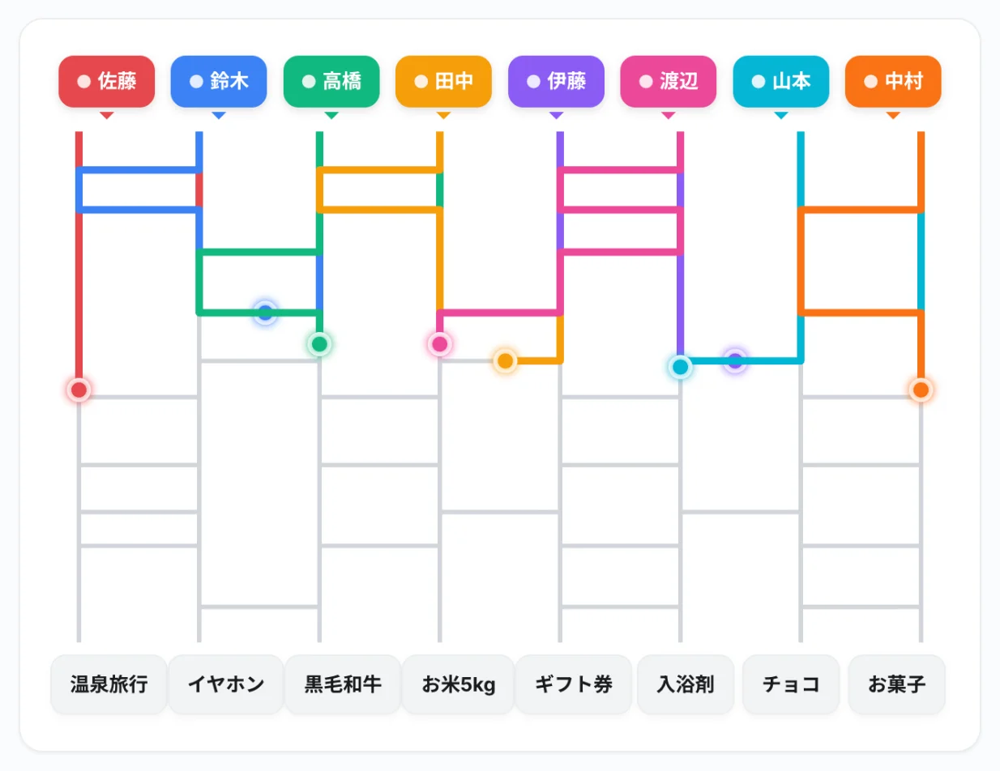
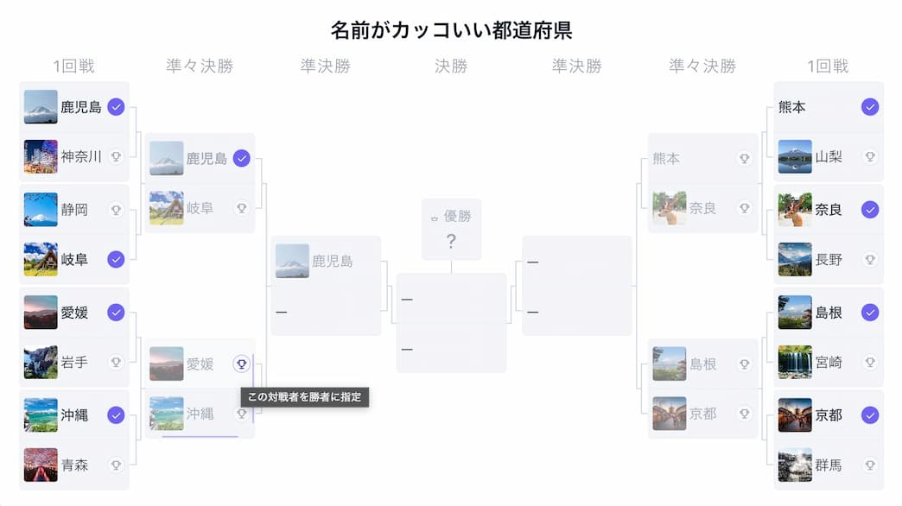

忘年会で盛り上がるゲーム・余興15選｜スクリーンに映すだけの抽選・ランキング演出も【幹事向け】

忘年会の幹事を任されたけれど、何をやれば盛り上がるのか分からない。準備に時間はかけられないし、滑ったらどうしよう。そんな悩みを抱えていませんか。
この記事では、準備がほとんどいらない定番ゲームから、チーム対抗戦、少人数で披露する余興までを、人数・会場・準備時間で選べる形にまとめました。さらに、会場のプロジェクターやモニターに映すだけで場が盛り上がる、景品抽選・チーム分け・ランキング発表の演出を比較表つきで紹介します。
記事内で紹介している「あみだくじメーカー」「ランキング動画メーカー」「格付けダービー」「トーナメント表アニメーター」は、当サイト（GraphRace Studio）が開発・運営している無料ツールです。ツールを使わずにできるゲームも多数紹介しているので、会場や参加者に合わせて選んでください。
忘年会のゲーム・余興の選び方
ゲームと余興の違い
「余興」は宴会を盛り上げるための出し物全般を指し、その中に参加者全員で遊ぶゲームと、一部の人が披露する出し物（ものまね・演奏・寸劇など）が含まれます。会社の忘年会では、全員が参加できて準備の負担も小さいゲームが中心になり、出し物はやりたい人がいる場合に加える、という形が無難です。
選ぶときの4つの軸
- 人数：10人以下なら全員で1つのゲーム、20人を超えるならチーム分けが前提になります
- 会場の形式：座敷・着席の居酒屋では座ったままできるもの、立食やホールなら移動するゲームも選べます
- 準備にかけられる時間：前日までに用意できるのは何時間か。道具を買いに行く必要があるかも含めて考えます
- 参加者の年齢層・関係性：役職の幅が広い場合は、体を張るゲームや個人をいじる内容を避けます
人数×会場の早見表
| 人数 | 座敷・着席の居酒屋 | 立食・ホール | オンライン |
|---|---|---|---|
| 〜10人 | NGワードゲーム、ワードウルフ | ジェスチャーゲーム、以心伝心ゲーム | ワードウルフ、クイズ |
| 10〜30人 | クイズ、ぴったり予想ゲーム | 伝言ゲーム、絵しりとり | クイズ、ランキング予想 |
| 30人以上 | ビンゴ、ランキング予想 | ビンゴ、チーム対抗クイズ | ビンゴ、ランキング予想 |
横にスクロールできます
どの規模でも共通して使えるのが、スクリーンに映す景品抽選とランキング発表です。全員が同じ画面を見るので、人数が増えても一体感が崩れません。
子どもが参加する会や、プレゼント交換のあるクリスマス会を企画している場合は、クリスマス会で盛り上がるゲーム20選｜子供会・保育園・大人向けもあわせてご覧ください。
座ったままできる定番ゲーム5選
道具がほとんどいらず、食事や歓談の合間に差し込めるゲームです。
1. ビンゴ
- 人数：10人〜何人でも
- 所要時間：20〜30分
- 準備物：ビンゴカード、抽選機（スマホアプリでも可）、景品
- 盛り上がるコツ：リーチの人に立ってもらうと、会場全体が状況を共有でき、ビンゴが出た瞬間の歓声が大きくなります
2. 社内クイズ
- 人数：5人〜何人でも（チーム戦にも対応）
- 所要時間：15〜20分
- 準備物：問題を映すスライド、解答用の紙やフリップ
- 盛り上がるコツ：会社の歴史や社内の数字（今年の出荷数など）を混ぜると、誰でも答えられて話題も広がります。一般常識の問題とバランスをとってください
3. NGワードゲーム
- 人数：4〜8人（テーブルごとに実施）
- 所要時間：歓談中ずっと
- 準備物：NGワードを書いたカード、はちまきや付箋
- 盛り上がるコツ：自分以外のNGワードだけが見えるように額に貼り、ほかの人に言わせるよう誘導します。「はい」「すごい」など日常語ほど引っかかりやすくなります
4. ワードウルフ
- 人数：4〜8人
- 所要時間：1回5分前後
- 準備物：スマホアプリ、またはお題を書いた紙
- 盛り上がるコツ：「うどん／そば」のように、似ているけれど少し違うお題を選びます。1人だけ違うお題を持つ人を、会話から推理して当てます
5. ジェスチャーゲーム
- 人数：6人〜（2チームに分けると進めやすい）
- 所要時間：10〜15分
- 準備物：お題カード、タイマー
- 盛り上がるコツ：制限時間を1チーム1分などに区切り、何問当てられるかを競います。お題は「今年の社内の出来事」を混ぜると盛り上がります
チーム対抗で盛り上がるゲーム4選
部署をまたいでチームを組むと、ふだん話さない人同士の交流にもつながります。
6. 伝言ゲーム
- 人数：1チーム5〜8人
- 所要時間：10〜15分
- 準備物：お題を書いた紙
- 盛り上がるコツ：早口言葉や、似た音が続く文をお題にすると、最後の人の答えが大きく変わって笑いが起きます
7. ぴったり予想ゲーム
- 人数：3チーム以上
- 所要時間：10〜15分
- 準備物：数値で答えるお題、フリップ
- 盛り上がるコツ：「社長の靴のサイズは？」「このビルの階段は何段？」など、正解がある数字を各チームで予想し、いちばん近いチームが勝ちです。知識がなくても参加できます
8. 以心伝心ゲーム
- 人数：1チーム3〜5人
- 所要時間：10分
- 準備物：フリップやホワイトボード
- 盛り上がるコツ：「冬といえば？」などのお題に、チーム全員が相談せずに答え、全員一致を目指します。一致した瞬間の盛り上がりが大きいゲームです
9. 絵しりとり
- 人数：1チーム4〜6人
- 所要時間：10〜15分
- 準備物：紙とペン（ホワイトボードがあれば全員に見せられる）
- 盛り上がるコツ：言葉を使わず、絵だけでしりとりをつなげます。最後に答え合わせをすると、途中で解釈がずれていた箇所で笑いが起きます
チーム分けは「あみだくじ」で公平に
チーム対抗戦で意外と揉めるのが、チームの決め方です。幹事が決めると「なぜこのメンバー？」と思われがちなので、その場で抽選して見せると公平感が出ます。
あみだくじメーカーの「チーム分け」モードを使えば、参加者の名前を入力してチーム数（2〜6チーム）を選ぶだけで、均等な人数に自動で振り分けられます。チーム名は「A・B・Cチーム」「赤組・白組」「第1班・第2班」から選べます。

スクリーンに映して盛り上がる演出アイデア4選
会場にプロジェクターや大型モニターがあるなら、画面に映す演出を1つ入れるだけで、忘年会の印象はぐっと変わります。全員が同じ画面を見ながら声を上げられるので、人数が多い会ほど効果的です。
ここでは、ブラウザだけで使える4つの演出を紹介します。まずは比較表で、会の規模と準備時間に合うものを選んでください。
| 演出 | 使うツール | 向いている人数 | 人数が多いときは | 作成時間の目安 | 当日のインターネット接続 | 向いているゲーム・余興 |
|---|---|---|---|---|---|---|
| 景品抽選・チーム分け | あみだくじメーカー | 2〜20人 | 21人以上は、テーブルや部署ごとにくじを分ける／チームの代表者だけで引く | 約5分 | ページを開いておけば不要（URL共有機能を使う場合のみ必要） |
|
| 社内アンケートのランキング発表 | ランキング動画メーカー | 人数制限なし （項目は最大50） |
全員の回答を事前に集計し、上位だけ発表する（TOP5〜10が見やすい） | 15〜30分 （画像を入れる場合） |
ページを開いておけば不要 |
|
| 着順予想レース | 格付けダービー | 出走は2〜16頭 （観戦は何人でも） |
17人以上は、チームや部署を出走馬にする／予想は全員が紙やチャットで参加 | 10〜15分 （＋録画約1分） |
事前に録画（WebM）すれば不要 |
|
| ゲーム大会の勝ち上がり表示 | トーナメント表アニメーター | 4〜32人（組） | 33人以上は、チーム単位で登録する／予選をテーブルごとに行い、代表者だけでトーナメントにする | 約10分 | ページを開いておけば不要 |
|
横にスクロールできます
4つのツールは、いずれもデータの処理がブラウザ内で完結します。インターネットにつながる場所でページを開いておけば、会場のWi-Fiが不安定でもそのまま操作できます。ただし、ページの再読み込みやタブを閉じた場合は再接続が必要です。格付けダービーの3D「リアル競馬風」は読み込むデータが多いため、事前に録画した動画を持っていくのが確実です。作成時間は、名前の入力から見た目の調整までを含めた当サイトでの目安です。
10. 景品抽選・チーム分け：あみだくじメーカー
忘年会の締めに欠かせない景品抽選を、スクリーンの上で公平に行えます。参加者と景品を1行ずつ入力するだけで、あみだくじが自動で作られます。名前をタップすると光の玉が線をたどり、ゴールに着くと紙吹雪が舞います。
- 全員スタートと個別スタート：一斉に結果を出すことも、1人ずつ名前を呼んでタップすることもできます。目玉景品は個別スタートでじらすと盛り上がります
- 効果音と全画面表示：プロジェクター投影を想定した全画面表示モードがあり、効果音もオン・オフを切り替えられます
- 結果をすぐ共有：結果はテキストコピーやPNG画像で保存できるので、景品の受け渡し漏れを防げます

参加者が21人以上いる場合は、テーブルごとや部署ごとにくじを分けて何回か回すか、各チームの代表者だけで引く形にすると、1回の抽選が長くなりすぎません。
11. 社内アンケートのランキング発表：ランキング動画メーカー
事前に社内アンケートをとっておき、その結果をランキング形式で発表する演出です。「今年いちばん頑張った部署」「社内で流行った言葉」「来年行きたい社員旅行先」など、お題を変えるだけで何度でも使えます。
ランキング動画メーカーでは、順位ごとに名前・説明・画像を入力すると、カードが右から流れてきて1位まで順番にランクインしていきます。発表の前に「1位はどれだと思う？」と会場に予想させると、クイズとしても楽しめます。
カード型のほかにも、カウントダウン形式やレース形式など、ランキングの見せ方にはいくつか種類があります。会の雰囲気に合う発表方法を比べたい場合は、順位発表動画の作り方｜演出6タイプと無料ツール・素材まとめを参考にしてください。
画像の入れ方や縦型・横型の切り替えなど、操作の手順はYouTubeでよく見るランキング動画の作り方で詳しく解説しています。
「〇〇さんのあだ名ランキング」のように特定の個人をからかう内容や、下位の順位が本人の評価に見えるお題は避けてください。発表するのは上位だけにするか、部署・出来事・食べ物など、人以外のお題にすると安心です。
12. 着順予想レース：格付けダービー
ランキング発表を、競馬中継風のレースで見せる演出です。格付けダービーでは、幹事があらかじめ最終着順を決めておくと、道中の展開は毎回変わりながら、ゴールでは必ずその順番になります。
おすすめの使い方は、アンケート結果を使った「1着予想ゲーム」です。
- お題を決めて事前にアンケートをとる「来年の社員旅行、行きたい場所は？」など、選択肢が4〜12個程度のお題が向いています。
- 集計結果の順に出走馬を並べる出走馬リストは上から最終着順です。選択肢を馬名として登録し、得票数の順に並べます。
- レースを録画しておく録画ボタンで、スタートから結果発表までをWebM形式の動画として保存できます。
- 当日は1着を予想させてから再生する予想が当たった人の中から、あみだくじで景品の当選者を決めるとつながりよく進められます。
出走馬は最大16頭です。参加者が17人以上いる会では、個人ではなくチームや部署を出走馬にするか、予想だけを全員で行うのがおすすめです。軽快な2D「競馬風」と、3DCGの馬が走る「リアル競馬風」はボタン1つで切り替えられます。
詳しい設定方法は競馬風の順位発表動画「格付けダービー」の作り方で解説しています。
13. ゲーム大会の勝ち上がり表示：トーナメント表アニメーター
じゃんけん大会や腕相撲、スマホゲームの対戦など、勝ち抜き戦を行うときに使える演出です。トーナメント表アニメーターに参加者（4〜32人）を登録してスクリーンに映しておき、試合が終わるたびに勝者をクリックすると、勝ち上がりの線がアニメーションで伸びていきます。
画面を見れば次の対戦カードがひと目で分かるので、幹事が「次は誰と誰です」と何度も読み上げる必要がありません。参加者が33人以上いる場合は、テーブルごとに予選を行い、代表者だけでトーナメントを組むとテンポよく進められます。

操作の詳細は動くトーナメント表の作り方で紹介しています。
当日の準備と注意点
- 前日までに作って一度通しで再生する：名前の誤字や、画像の表示崩れがないかを確認します
- 動画にできるものは録画して持っていく：格付けダービーは内蔵の録画機能で保存できます。ほかのツールも、パソコンの画面録画機能で動画にできます
- 会場の設備を確認する：プロジェクターやモニターの有無、HDMIなどの接続端子、音をスピーカーから出せるかを、予約時に店舗へ確認します
- パソコンの通知をオフにする：投影中にチャットやメールの通知が映らないよう、集中モードなどで通知を止めておきます
少人数で披露する出し物系の余興2選
ゲームとは別に、有志が何かを披露したい場合の定番です。無理に誰かに頼むのではなく、やりたい人がいるときに加えてください。
14. 社内あるある寸劇
「会議が長引く理由」「月末の経理部」など、社内の誰もが分かるあるあるを短い寸劇にします。3〜5分で終わる長さにし、特定の個人ではなく状況を笑いにするのが、滑らず角も立たないコツです。準備は台本づくりと1〜2回の練習で済みます。
15. 有志の演奏・ダンス
楽器やダンスが得意な人がいれば、それだけで立派な余興になります。1曲・3〜5分程度にとどめ、会場で音を出してよいか、スペースが足りるかを事前に店舗へ確認してください。
失敗しないための注意点
- 参加を強制しない：人前に出るのが苦手な人もいます。見ているだけでも楽しめる、全員参加型の抽選やランキング予想を中心にすると安心です
- 罰ゲームは避けるか、軽いものにする：一気飲みや容姿をいじる罰ゲームはハラスメントになりえます。罰ゲームの代わりに「勝った人に景品」の形にすると角が立ちません
- お酒を強要しない：ゲームの勝ち負けと飲酒を結びつけないようにします
- お金を賭けない：着順予想やビンゴで、参加者どうしが現金を賭けるのは避けてください。景品は幹事や会社が用意する形にします
- ゲームは合計30〜40分に収める：詰め込みすぎると歓談の時間がなくなり、かえって満足度が下がります
当日の進行例（2時間の忘年会）
飲み放題2時間の居酒屋を想定した、ゲームと演出を組み合わせた進行例です。
| 時間 | 内容 | ポイント |
|---|---|---|
| 0:00〜0:10 | 開会・乾杯のあいさつ | あいさつは短めに。進行の流れを最初に伝えておく |
| 0:10〜0:40 | 歓談 | テーブルごとにNGワードゲームを仕込んでおくと会話が弾む |
| 0:40〜0:45 | チーム分け | あみだくじメーカーのチーム分けモードをスクリーンで実施 |
| 0:45〜1:05 | チーム対抗ゲーム | ぴったり予想ゲームや以心伝心ゲームを2〜3問 |
| 1:05〜1:35 | 歓談 | 料理の追加や飲み物の注文が落ち着くタイミング |
| 1:35〜1:45 | アンケート結果発表 | ランキング動画メーカーか格付けダービーで発表。1着予想も同時に行う |
| 1:45〜1:55 | 景品抽選 | 予想が当たった人、または全員であみだくじを引く |
| 1:55〜2:00 | 締めのあいさつ | ラストオーダーの時間を事前に店舗へ確認しておく |
横にスクロールできます
よくある質問（FAQ）
忘年会のゲームはいくつ用意すればいいですか？
2時間の忘年会なら、メインのゲームを1〜2つと、最後の景品抽選を1つ用意すれば十分です。ゲームの合計は30〜40分程度に抑え、歓談の時間をしっかり残すと満足度が上がります。
景品の予算はどれくらいが目安ですか？
決まった相場はなく、会費や会社の補助によって変わります。目玉の景品を1つ用意し、残りは参加者全員に行き渡る小さな景品にすると、当たらなかった人の不満が出にくくなります。
少人数の忘年会でも楽しめますか？
楽しめます。ワードウルフやNGワードゲームは4〜6人程度がいちばん盛り上がります。あみだくじも2人から使えるので、少人数でも景品抽選や席替えに使えます。
オンライン忘年会でも使えますか？
使えます。クイズやワードウルフのほか、あみだくじ・ランキング発表・格付けダービーのレースもブラウザの画面を共有すれば、オンライン会議の参加者全員で同時に見られます。
新年会や歓送迎会でも同じゲームを使えますか？
使えます。この記事で紹介したゲームや演出は季節に関係なく使えるものばかりです。ランキング発表のお題を「今年の抱負」や「思い出」に変えるだけで、新年会や送別会向けにアレンジできます。
会場で流すBGMや効果音に市販の曲を使ってもいいですか？
社内で非営利・無料・出演者に報酬なしの条件で上映するだけなら、許諾なく使える場合があります（著作権法38条）。一方、録画した動画をSNSや動画サイトに公開する場合は対象外になるため、著作権フリーの音源を使うのが安全です。飲食店の会場では、店舗側のルールも事前に確認してください。
まとめ
忘年会のゲームや余興は、数をたくさん用意するより、人数と会場に合ったものを1〜2つ選び、最後の抽選や結果発表でしっかり盛り上げるほうが満足度は高くなります。
- 人数・会場の形式・準備時間・参加者の関係性の4つの軸でゲームを選ぶ
- 20人を超える会はチーム分けが前提。チームはあみだくじで公平に決める
- スクリーンに映す抽選やランキング発表は、人数が多い会ほど一体感が出る
- 罰ゲーム・飲酒の強要・金銭の賭けは避け、ゲームは合計30〜40分に収める